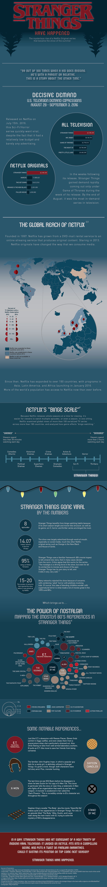

Stranger Things Have Happened

About This Project
This infographic is a closer look at the Netflix Original Series, Stranger Things, which went viral during the summer of 2016. With a low budget, little advertising, and many rejections in its early stages, I was curious and interested in dissecting its success. I was particularly interested in the role that nostalgia had to play in its creation. There were many shot-for-shot homages to 80s pop culture that clearly influenced the film. Stranger Things harnesses what made 80s media successful, and provides a modern twist. GIS data was processed in ArcMap. The bulk of the design was done in Illustrator, including typography, symbology, and other design elements.